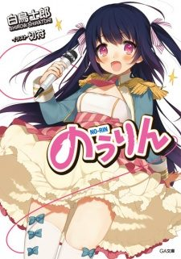
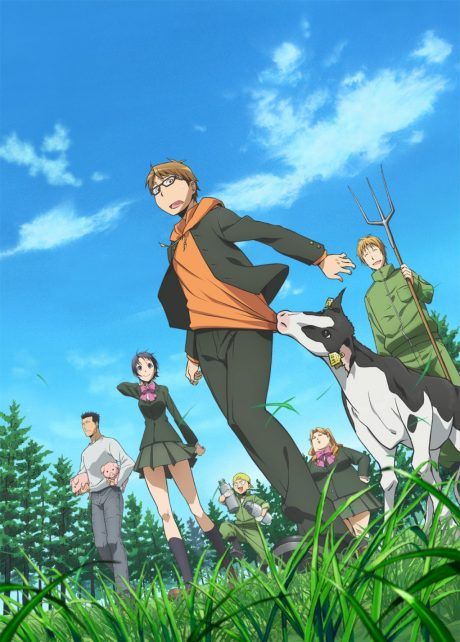
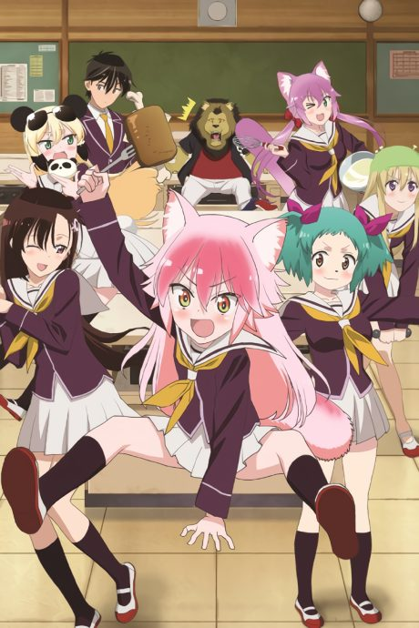
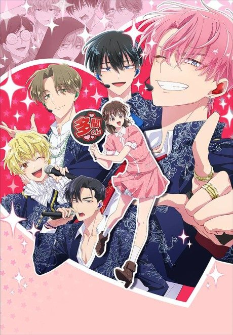

No-Rin
のうりん
Kosaku, devastated by his favourite idol's retirement, finds that she has transferred into his agricultural school.
We haven't found where the anime ends in the light novel yet.
6.4AniList score
—Animeter, no votes yet
12episodes
Rate it or report where you stopped
Is it worth pushing through?
Built from what visitors report across all 12 episodes.
Loading reports…Checking what other people said about this one.
Sign in above with your email to add your report.
More like No-Rin
 Manga Ch. 368.0
Manga Ch. 368.0
 Unclear6.7
Unclear6.7
 Manga Ch. 827.3
Manga Ch. 827.3
 Manga Vol. 97.1
Manga Vol. 97.1

Manga Ch. 767.9 Manga Ch. 2907.6
Manga Ch. 2907.6
 Manga Ch. 486.9
Manga Ch. 486.9
 Unclear8.1
Unclear8.1
 Manga Ch. 477.6
Manga Ch. 477.6

Unclear6.7
Unclear7.8 Manga Ch. 346.3
Manga Ch. 346.3